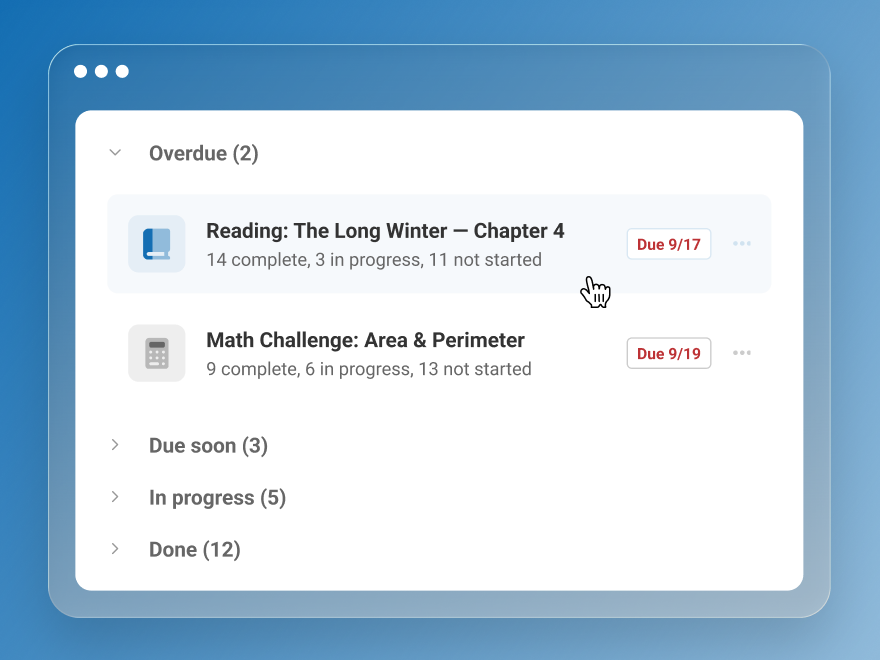

Classroom Assignment Management
Renaissance · Senior UX Designer
Eight finished. Which two needed help?
I challenged the MVP and coordinated a priority view with student identities.
Shipped in six weeks; fewer trips to separate reports.
Read the story →